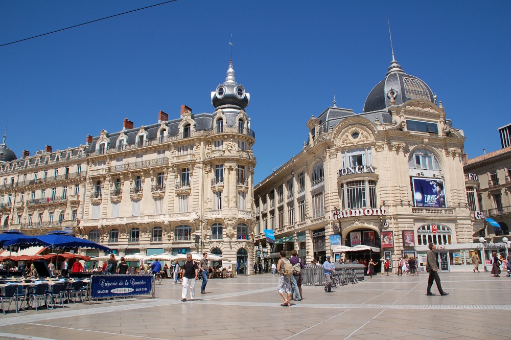
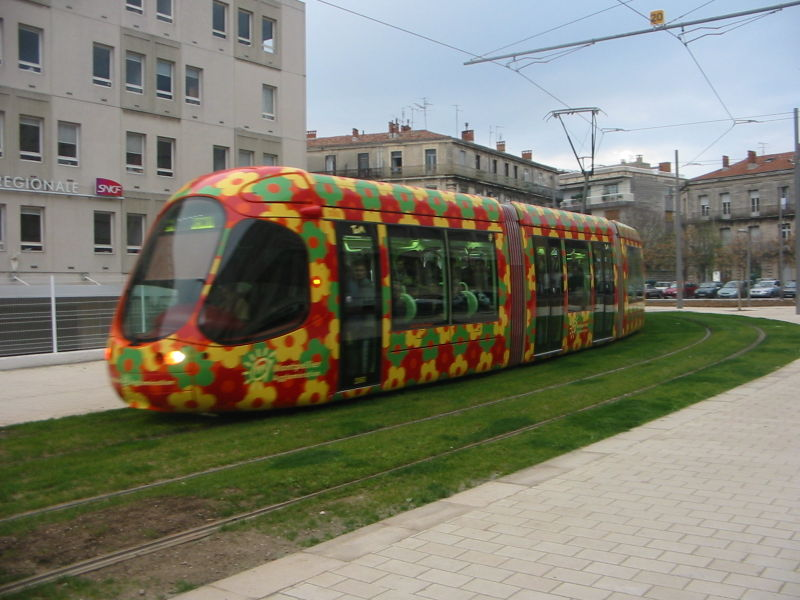

OWL: Experiences and Directions 2013
10th OWL: Experiences and Directions Workshop (OWLED 2013)
Montpellier, France, 26th-27th May, 2013


 [CC-BY-SA-2.5 (http://creativecommons.org/licenses/by-sa/2.5) or CC-BY-SA-2.5 (http://creativecommons.org/licenses/by-sa/2.5)], via Wikimedia Commons")
 [CC-BY-SA-2.5 (http://creativecommons.org/licenses/by-sa/2.5) or CC-BY-SA-2.5 (http://creativecommons.org/licenses/by-sa/2.5)], via Wikimedia Commons")
Drugs, genetics and phenotypes: an admission of formal semantics in biomedical research
Invited talk. Sunday May 26th 9:30am
Abstract: With its focus on investigating the nature and basis for the sustained existence of living systems, modern biology has always been a fertile, if not challenging, domain for formal knowledge representation and automated reasoning. Over the past 15 years, hundreds of projects have developed or leveraged ontologies for entity recognition and relation extraction, semantic annotation, data integration, query answering, consistency checking, association mining and other forms of knowledge discovery. In this talk, I will discuss our efforts to build a rich foundational network of ontology-annotated linked data, discover significant biological associations across these data using a set of partially overlapping ontologies, and identify new avenues for drug discovery by applying measures of semantic similarity over phenotypic descriptions. As the portfolio of Semantic Web technologies continue to mature in terms of functionality, scalability and an understanding of how to maximize their value, increasing numbers of biomedical researchers will be strategically poised to pursue increasingly sophisticated KR projects aimed at improving our overall understanding of the capability and behaviour of biological systems.
Speaker Bio
Dr. Michel Dumontier, PhD is an Associate Professor of Bioinformatics in the Department of Biology, the Institute of Biochemistry and School of Computer Science at Carleton University in Ottawa, Canada. His research focuses on the development of computational methods to increase our understanding of how living systems respond to chemical agents. At the core of the research program is the development and use of Semantic Web technologies to formally represent and reason about data and services so as (1) to facilitate the publishing, sharing and discovery of scientific knowledge produced by individuals and small collectives, (2) to enable the formulation and evaluation scientific hypotheses using our collective tools and knowledge and (3) to create and make available computational methods to investigate the structure, function and behaviour of living systems. Dr. Dumontier serves as a co-chair for the World Wide Web Consortium Semantic Web in Health Care and Life Sciences Interest Group (W3C HCLSIG) and is the Scientific Director for Bio2RDF, a widely used open-source project to create and provide linked data for life sciences.